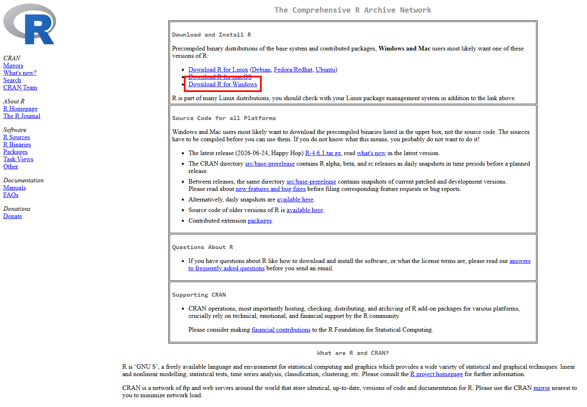
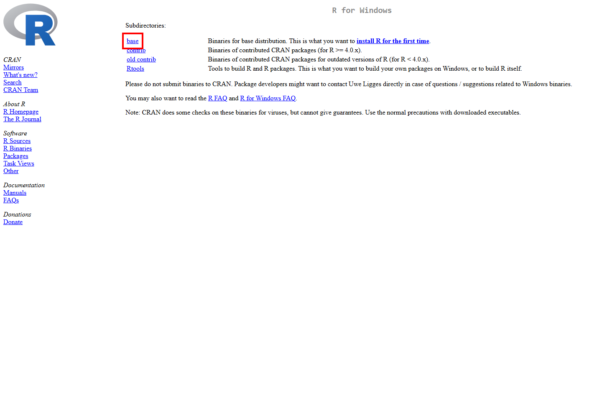
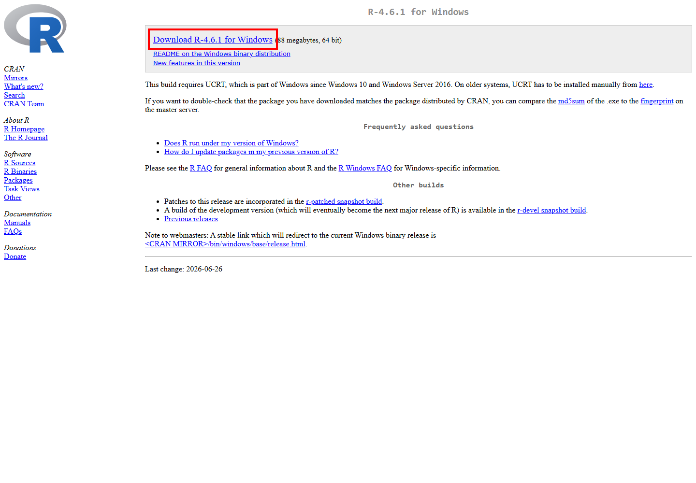
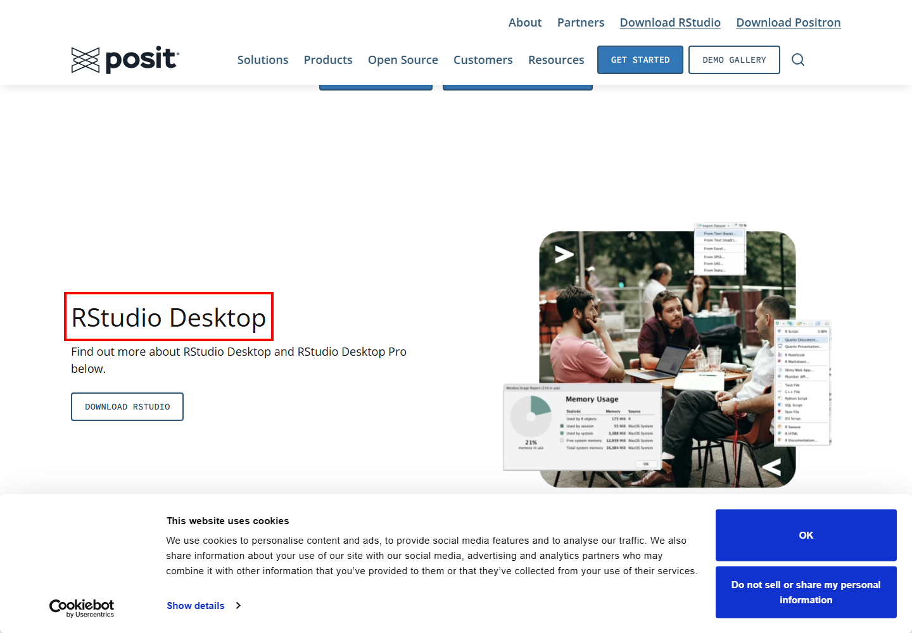
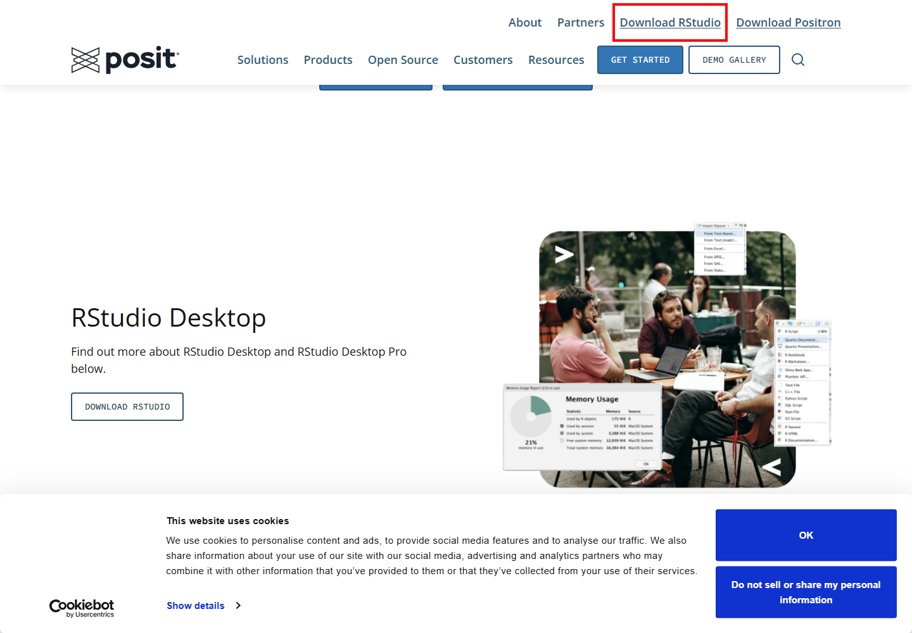

R 및 RStudio 설치 가이드
0.1 R과 RStudio란?
R을 처음 사용하는 경우 R과 RStudio를 모두 설치하는 것을 권장합니다.
- R: 통계분석과 데이터 처리를 실제로 수행하는 프로그램입니다.
- RStudio: R 코드를 보다 편리하게 작성하고 실행할 수 있도록 도와주는 통합 개발 환경(IDE)입니다.
중요: RStudio만 설치해서는 R을 사용할 수 없습니다. R을 먼저 설치한 후 RStudio를 설치합니다.
0.2 설치 순서
- R 다운로드 및 설치
- RStudio Desktop 다운로드 및 설치
- RStudio 실행
- 정상 설치 여부 확인
1 R 설치
1.1 CRAN 접속
R 공식 다운로드 사이트인 CRAN에 접속합니다.
https://cran.r-project.org/

화면에서 Download R for Windows를 클릭합니다.
1.2 Windows용 R 다운로드
Windows용 페이지로 이동한 뒤 base를 선택합니다.

그다음 최신 버전의 R 설치 파일을 다운로드합니다.

실제 R 버전 번호는 시점에 따라 달라질 수 있습니다.
다운로드한 .exe 파일을 실행합니다.
2 RStudio 설치
2.1 Posit 다운로드 페이지 접속
RStudio Desktop은 Posit에서 제공합니다.
https://posit.co/downloads/

페이지에서 RStudio Desktop의 Open Source Edition을 선택합니다.
2.2 RStudio 다운로드
RStudio Desktop 다운로드 영역을 확인합니다.

Windows용 설치 파일을 다운로드하여 실행합니다.
대부분 기본값으로 설치하면 됩니다.
Next → Next → Install → Finish
3 RStudio 실행
설치가 끝나면 Windows 시작 메뉴에서 RStudio를 검색해 실행합니다.
RStudio가 정상 실행되면 일반적으로 다음 영역을 볼 수 있습니다.
| 영역 | 주요 기능 |
|---|---|
| Source | R 코드 작성 |
| Console | R 명령 실행 및 결과 확인 |
| Environment | 생성한 데이터와 객체 확인 |
| Files / Plots / Packages / Help | 파일, 그래프, 패키지, 도움말 확인 |
4 정상 설치 확인
Console에 다음 코드를 입력합니다.
1 + 1다음 결과가 나오면 정상입니다.
[1] 2R 버전 확인:
R.version.string5 간단한 R 코드 실행
x <- c(10, 20, 30, 40, 50)
mean(x)코드를 선택한 후 Ctrl + Enter를 누르면 실행됩니다.
6 패키지 설치
install.packages("dplyr")사용할 때:
library(dplyr)또는:
install.packages("tidyverse")
library(tidyverse)7 설치 주소 요약
| 프로그램 | 공식 다운로드 주소 |
|---|---|
| R | https://cran.r-project.org/ |
| RStudio Desktop | https://posit.co/downloads/ |
8 설치 흐름 요약
① CRAN 접속
↓
② R 다운로드 및 설치
↓
③ Posit 접속
↓
④ RStudio Desktop 다운로드 및 설치
↓
⑤ RStudio 실행
↓
⑥ Console에서 1 + 1 실행
↓
⑦ [1] 2가 나오면 완료